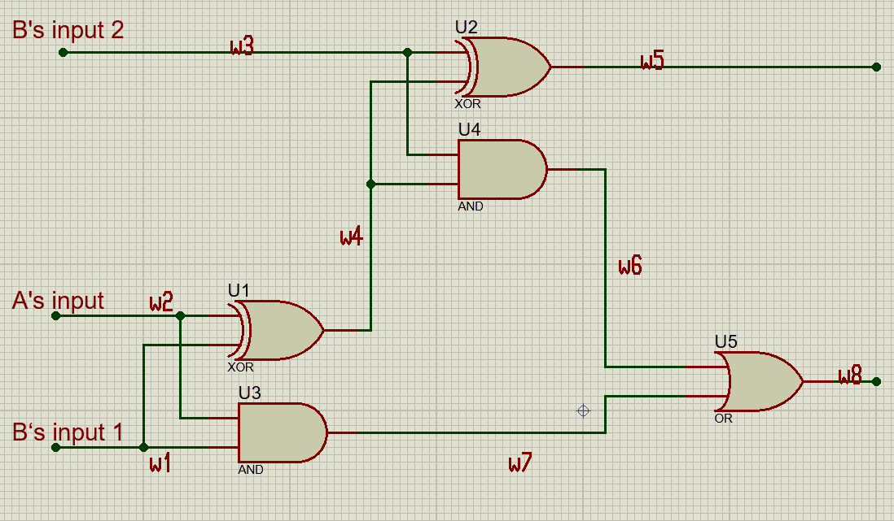

之前提到安全计算要做到的是计算，其中，分别是两个参与方 持有。
乱码电路的关键思想在于将需要计算的函数 表示为一个查找表。
# 查找表
我们现在已经有了一个函数，一个十分简单粗暴的方法在于，我们枚举这个函数的所有输入 并计算对应的输出，构造这样的一张表。
举个例子，A 和 B 各扔了一个骰子，A 的点数是，而 B 的点数是，我们需要比较两个人的点数谁更大，如果 A 比 B 大，则输出 1，否则输出 0。也就是：
这样子就可以构造出一张查找表：
| x/y | 1 | 2 | 3 | 4 | 5 | 6 |
|---|---|---|---|---|---|---|
| 1 | 0 | 0 | 0 | 0 | 0 | 0 |
| 2 | 1 | 0 | 0 | 0 | 0 | 0 |
| 3 | 1 | 1 | 0 | 0 | 0 | 0 |
| 4 | 1 | 1 | 1 | 0 | 0 | 0 |
| 5 | 1 | 1 | 1 | 1 | 0 | 0 |
| 6 | 1 | 1 | 1 | 1 | 1 | 0 |
那么只要去查找表 中对应 位置上的值，就可以知道 的结果了。
现在，A 构造了这样的一张查找表，然而，需要计算出函数的输出需要 A 和 B 两个人的共同努力，A 无法独自得到结果。而为了保证两个人点数的隐私性，A 也不能把自己的点数告诉 B，或者去询问 B 的点数。
乱码电路的构造思路在于，A 可以去用密钥加密这张表并发给 B，然后选择相应的密钥发给 B，从而不会泄露信息。
也就是，对于表中的每一个项目，A 都会去生成行密钥和列密钥 去用来加密这个表项。接下来，A 把加密之后的表 发给 B。同时，A 还会把自己输入 的这一行对应的行密钥 发给 B。而 B 收到这些消息之后，通过一个不经意传输协议，从 个列密钥中选择一个。这样子，B 就能够去解密出自己需要的密文。
# 标识置换
上面的方法确实解决了一部分问题，但是一个最大的问题需要去解决。B 收到了加密后的查找表，某一行的行密钥 和自己输入对应的列的列密钥。B 知道自己的输入，所以他知道该解密表上的哪一列，但是他不知道 A 的输入，也就是他并不知道该解密哪一行。
很明显，应该查找哪一行属于是一个隐私信息，因为这对应了 A 的输入。
一种思路在于，可以在查找表中构造一些特殊信息。例如：
| x/y | 1 | 2 | 3 | 4 | 5 | 6 |
|---|---|---|---|---|---|---|
| 1 | 00000000 | 00000000 | 00000000 | 00000000 | 00000000 | 00000000 |
| 2 | 10000000 | 00000000 | 00000000 | 00000000 | 00000000 | 00000000 |
| 3 | 10000000 | 10000000 | 00000000 | 00000000 | 00000000 | 00000000 |
| 4 | 10000000 | 10000000 | 10000000 | 00000000 | 00000000 | 00000000 |
| 5 | 10000000 | 10000000 | 10000000 | 10000000 | 00000000 | 00000000 |
| 6 | 10000000 | 10000000 | 10000000 | 10000000 | 10000000 | 00000000 |
在每一个查找表表项后面加上若干个 0。很明显的，当 B 使用了正确的密钥去解密某个表项时，他得到的答案的后面若干比特都是 0。而使用错误的密钥去解密某个表项，后面若干比特都是 0 的概率基本上趋近于 0。
这样，B 每次都会随机选择一行去解密，如果解密出来的结果满足最低的若干 bit 都是 0，那么就认为是找到了对应的结果。否则换一行去重新解密。
然而，这样的效率是非常低的，从一张非常巨大的查找表里面找到一个信息要反复非常多次的寻找。
一个思路是 Beaver et al. 提出的标识置换（point-and-permute）。标识置换是将密钥的一部分替换为一个置换标识，用来标识这个密钥是加密哪一行（列）。一个简单的例子是，对于上面掷骰子的查找表，选择 3bit 作为标识，001 代表第一行，010 代表第二行，以此类推。最后 3bit 为 001 的密钥用来加密第一行查找表，010 的密钥用来加密第二行查找表。
# 优化
上面的方法实际上给出了乱码电路的一个思路，但是问题在于，如果 的定义域非常大，那么计算这个乱码电路也就需要非常大的空间和时间复杂度。
而简单的门电路定义域的大小只有 4，用来做查找表是非常容易的。
| 0 | 0 | 0 |
| 0 | 1 | 0 |
| 1 | 0 | 0 |
| 1 | 1 | 1 |
如果我们能够将需要计算的函数 表示一个有许多门电路组成的布尔电路，并且分别求解各个门电路的的输出，我们也就能够去计算函数 的输出。但是要注意到，中间的门电路的结果不能公开 —— 因为有可能泄露某一方的秘密输入。
乱码电路中的解决方案在于指定导线上的标签和取值：
参与方 A 为 中的每一条导线 指定密钥 和。导线 的取值（0 或者 1）是导线值，导线值相对应了导线标签，也就是指定的密钥 或。
给定了这个电路 一个输入之后，每条导线都有一个确定的导线值即激活值，这个激活值也就对应了一个导线标签，也就是密钥。
对于一个门电路，可以构建一个这样的经过加密的查找表：
这个表中每一行都是门电路输出值对应的导线标签的密文。A 构造这张表后，B 能够通过交互得到得到输出对应的导线标签，但是不能够得到导线的激活值。
在执行乱码电路的过程中，A 构造乱码电路中所有门电路的查找表并且进行标识置换，将置换后的查找表即乱码表发送给 B。
接下来，A 将自己的导线输入值对应的激活值发送给 B。对于乱码电路中 B 的导线的输入值，A 和 B 通过一个 2 选 1-OT 传输激活标签。获得了这些标签之后，B 就能够计算得到最终的结果对应的标签，发送给 A 解密之后也就能够得到函数最后的结果。
以一个简单的例子来说明：

这是一个全加器，我们假设 A 输入为一个加数，B 输入为另一个加数和进位，电路最终的输出为导线 对应的加法结果和导线 对应的进位。
首先 A 会构造各个门电路对应的乱码表：
| U1（XOR） | U2（XOR） | U3（AND） | U4（AND） | U5（OR） |
|---|---|---|---|---|
接下来我们假设 A 输入为 0，B 的输入加数为 0，进位为 1。那么乱码电路执行的过程如下：
A 将激活标签 发送给 B，并通过 2 选 1-OT 将标签 和 发送给 B。
B 在接收到这些标签之后，可以在门电路 对应的乱码表中使用得到的 解密出导线 对应的表项 的值即。同样针对门电路 可以使用 解密出对应的值，针对门电路 解密出，针对门电路 解密出，接下来最后针对门电路 解密出。
在计算出所有标签之后，B 将 和 发送给 A，A 可以解密出结果为 1 和 0。
实际上，A 可以直接将输出导线的解码表发送给 B，这样 B 就没有必要将结果再发送给 A 进行解密。
# 参考资料
[1] David Evans; Vladimir Kolesnikov; Mike Rosulek, A Pragmatic Introduction to Secure Multi-Party Computation , now, 2018.